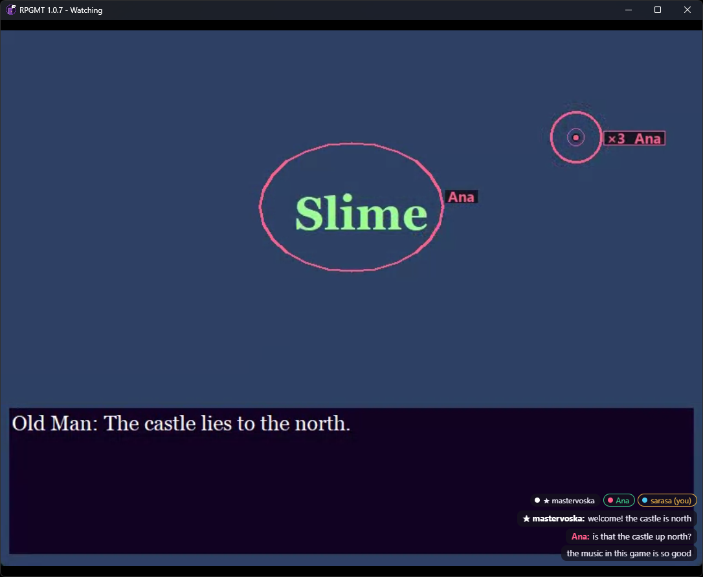

RPGMT
Play RPG Maker games together. One person plays; friends watch live with sound, ping, draw and chat.
Download for Windows Source & guide
- Watch together with only the game's sound.
- Click to ping, drag to draw on the host's screen.
- Chat that floats over the game.
- Read along: a small badge shows the host how many friends have read the line.
- Any RPG Maker game, over Hamachi, Radmin VPN, ZeroTier, Tailscale or LAN. Free and open source (MIT).